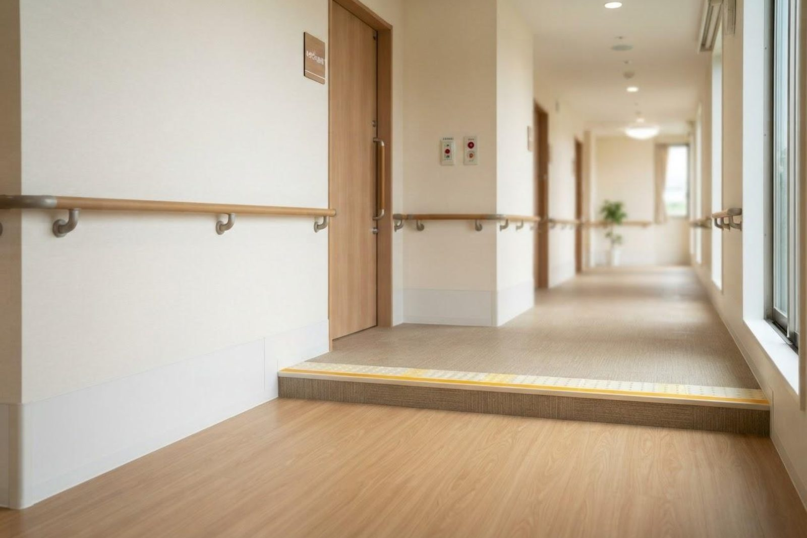

最近つまずきやすくなり、歩くのが遅くなりました。何かできることはありますか？
A. 回答つまずきやすさや歩く速さの低下は、年齢のせいと片づけられがちですが、筋力やバランス機能の低下、いわゆるフレイル（加齢に伴って心身の活力が低下した状態）のサインである場合があります。フレイルは要介護の一歩手前の状態とされる一方、運動・栄養・社会参加への取り組みによって進行をゆるやかにしたり、機能の回復が期待できる可逆的な状態とも考えられています。まずは現在の状態に気づくことが第一歩です。転倒を繰り返す、体重が減ってきた、といった変化がある場合は、背景に別の病気が隠れていることもあるため、一度ご相談ください。

つまずきやすくなる・歩くのが遅くなる背景
歩行の変化には、加齢による変化だけでなく、いくつかの要因が重なっていることが多いとされています。
- 筋力・バランス機能の低下：太ももやお尻、ふくらはぎの筋力が落ちると、足が十分に上がらず、わずかな段差でつま先が引っかかりやすくなるとされています。
- 関節の痛みや変形：膝や腰の痛みで歩く量が減ると、さらに筋力が落ちるという悪循環につながることがあります。
- 低栄養：食事量やたんぱく質の摂取が不足すると、筋肉量が保ちにくくなると考えられています。
- 持病や薬の影響：貧血、甲状腺の病気、心臓・肺の病気、糖尿病による神経の障害などがふらつきの背景にあることがあります。また、複数のお薬を服用している場合、ふらつきや眠気が生じることもあるとされています。
- 視力・平衡感覚の低下、住まいの環境：見え方の変化に加え、わずかな段差、電気コード、めくれた敷物、滑りやすい床、照明の暗さなども転倒の要因になるとされています。
フレイルのセルフチェック（5項目）
フレイルの評価にはいくつかの方法がありますが、身体面については次の5項目で確認する方法が一般的に用いられています。当てはまる数を数えてみてください。
当てはまるものはありますか？
- 体重減少：ダイエットをしていないのに、6か月で2kg以上体重が減った
- 疲労感：ここ2週間、わけもなく疲れたような感じがする
- 歩行速度：歩くのが遅くなった（横断歩道を青信号のうちに渡りきれないことがある）
- 握力の低下：ペットボトルのふたが開けにくい、握る力が弱くなったと感じる
- 活動量の低下：軽い運動や体操、定期的な運動・スポーツをしていない
一般的な目安として、3項目以上当てはまる場合はフレイル、1〜2項目の場合はその前段階（プレフレイル）と判断されるとされています。これは診断そのものではありませんが、1つでも当てはまるようであれば、生活を見直すきっかけとしてお使いください。
大切とされる3つの柱：運動・栄養・社会参加
フレイル予防では、「運動」「栄養」「社会参加」の3つが柱として挙げられています。どれか1つではなく、組み合わせて続けることが大切とされています。
- 運動：歩くこと（散歩）に加えて、椅子からの立ち座り、片足立ち、かかと上げなど、下半身の筋力とバランスを保つ運動が勧められています。無理のない範囲で、毎日少しずつ続けることが基本とされています。
- 栄養（特にたんぱく質）：高齢期はたんぱく質の摂取不足がフレイルの発生や進行に関わるとされ、肉・魚・卵・大豆製品・乳製品を毎食のいずれかに取り入れることが勧められています。あわせて、噛む力・飲み込む力を保つための口腔ケアや歯科受診も重要と考えられています。
- 社会参加：人との交流や役割を持つことが、活動量や食欲、意欲の維持につながるとされています。地域の集まり、通いの場、趣味の活動、買い物や家事の分担なども含まれます。
あわせて、住まいの環境を整えることも転倒予防につながるとされています。床に物を置かない、電気コードを壁沿いにまとめる、段差や階段・トイレ・浴室に手すりを付ける、夜間の廊下に足元灯を置く、滑りにくい履物を選ぶ、といった工夫が挙げられます。手すりの設置などの住宅改修や、歩行器・杖などの福祉用具は、要介護・要支援の認定を受けている方であれば介護保険の対象となる場合があります。
受診の目安
歩き方や体力の変化には、治療できる病気が隠れていることもあります。次のような場合はご相談ください。
すぐに受診を検討してください
- 転倒して頭を打った、強い痛みがある、立てない・歩けない
- 急に片側の手足に力が入らない、しびれる、ろれつが回らない
- 意識が遠のく感じや失神があった
- 転倒後に日を追って頭痛・吐き気・物忘れが強くなってきた
早めの受診をおすすめします
- この半年〜1年でつまずきや転倒が増えてきた
- 意図せず体重が減ってきた、食事量が明らかに減った
- じっとしていてもふらつく、めまいを伴う
- 膝や腰の痛みで外出や家事がしづらくなっている
- お薬を飲み始めてから、ふらつきや眠気が出るようになった
- 外出の回数が減り、家にいる時間が長くなっている
当院での対応と、介護のご相談について
当院はリハビリテーション科を標榜しており、内科と合わせて、歩行の変化の背景にある病気がないかを確認しながら対応しています。問診で転倒の状況や生活の様子をうかがい、必要に応じて血液検査、心電図、レントゲンなどで貧血・甲状腺・心臓・関節の状態などを確認します。服用中のお薬がふらつきに関わっていないかの見直しも含めてご相談いただけます。そのうえで、ご本人の状態に合わせた運動や生活の工夫についてご説明します。
当院は複合介護施設を併設しており、デイサービス・小規模多機能ホーム・訪問介護・居宅介護支援センター・サービス付高齢者向け住宅「メディケアビレッジかしわじま」を運営しています。「介護保険の申請はどうすればよいか」「日中ひとりで過ごすのが心配」といった介護に関するご相談にも、施設の相談員とともに対応できます。通院が難しくなった方には訪問診療・訪問看護もご用意しています。
受診にあたって
- 予約について：当院は予約制ではありません。診療時間内であれば当日そのままご来院いただけます。
- 診療時間：月〜土 7:00〜12:00 ／ 月〜金 14:30〜18:30（土曜の午後は17:30まで）。朝7時から診療していますので、ご家族の送迎に合わせた受診もしやすくなっています。
- 所要時間の目安：診察と基本的な血液検査・心電図などを行う場合、受付から会計まで1時間前後をみておかれると安心です（混雑状況により前後します）。
- 費用：診察・検査は保険診療の対象となります。自己負担割合により金額は異なりますので、詳しくはお問い合わせください。
- お持ちいただくもの：健康保険証（マイナ保険証）、お薬手帳、介護保険証をお持ちの方はそれもご持参ください。ふだん使っている杖や靴でお越しいただくと、歩行の様子を確認しやすくなります。
- 駐車場：無料22台。ニシナ玉島柏島店の西隣りです。
受診時に伝えていただきたいこと
- いつごろから歩きにくさ・つまずきを感じているか
- 転んだ回数と、そのときの状況（夜間・段差・立ち上がったとき など）
- 体重の変化（いつと比べて何kg減ったか）
- 現在服用中のお薬（他院で処方されているものも含めて）
- 外出の頻度、日中の過ごし方、同居されているご家族の有無
参考にした情報
歩きにくさや転倒が気になるとき、介護のことでお困りのときも、お気軽にご相談ください。
最終更新：2026年8月26日